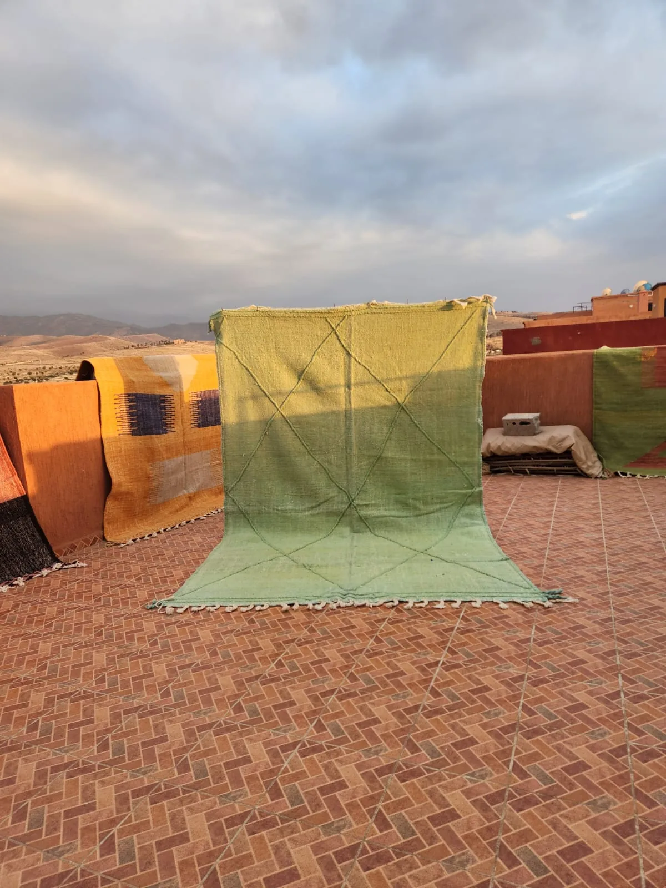

What is a kilim, exactly?
A kilim is a flat-woven textile — no knots, no pile, no fringe of cut wool standing up from a base. Instead, the weft threads are woven directly over and under the warp threads in a technique called slit weave, where each block of color is woven as its own small section and interlocked with the next. This is why kilim patterns are almost always geometric: triangles, diamonds, zigzags and stripes are the natural product of a weaving structure built from straight interlocking blocks of color, rather than a limitation of the weaver's imagination.
In Morocco, flat-weave textiles like this are woven across many regions and tribes, often by the same communities that also produce pile rugs — a household might weave both, choosing kilim technique for pieces meant to be thinner, lighter, or more durable underfoot in high-use areas.
- Origin: Woven across multiple regions of Morocco, not tied to a single tribe or area the way Beni Ourain or Boujaad are
- Materials: Hand-spun wool, sometimes blended with cotton for the warp threads
- Technique: Flat-woven (slit-weave) — no knots, no pile, reversible
- Pile height: None — flat, typically 2–4mm thick
- Pattern: Geometric — stripes, triangles, diamonds, zigzags, dictated by the weave structure itself
- Time to make: Faster than a knotted pile rug of the same size — typically 2–6 weeks
- Lifespan: Decades; thinner than pile rugs but very hard-wearing
Kilim vs. pile rug: what's actually different
The distinction matters more than most buyers realize, because it affects almost every practical decision about where and how to use the rug.
Thickness and weight. A pile rug like a Beni Ourain can be 25–40mm thick and genuinely heavy. A kilim is a few millimeters thick and light enough to fold. This makes kilims far easier to ship, layer, and move between rooms — and much less expensive to produce, which is reflected in price.
Reversibility. Because there's no pile, a kilim looks essentially the same on both sides. Many kilim owners flip the rug periodically to even out wear and fading — something impossible with a knotted pile rug.
Durability underfoot. Counterintuitively, a well-made kilim can outlast a pile rug in high-traffic areas. There's no pile to crush, mat or shed. This is why kilims have traditionally been used in kitchens, hallways, and entryways — places where a thick wool pile would trap dirt and wear unevenly.
Feel. A pile rug is soft and plush underfoot. A kilim is flatter and firmer — closer to a woven mat than a cushioned rug. Neither is "better"; they suit different rooms and different expectations.
"A pile rug is built up. A kilim is built through — the pattern isn't added to the weave, it is the weave."

How to recognise a genuine hand-woven kilim
Machine-made "kilim style" flat-weave rugs, often printed rather than woven, are common in mass retail. Here's what to check.
1. Check both sides. A genuine hand-woven kilim will look almost identical front and back — the pattern is structural, not printed on top. If the back is plain, uniform, or a different color entirely, the pattern was printed, not woven.
2. Look for slit-weave gaps. Where two color blocks meet vertically, a traditional slit-weave kilim often shows a tiny natural gap or slit in the weave — this is a genuine construction feature, not a flaw, and it's essentially impossible to fake in a printed or machine-made copy.
3. Feel for hand-spun irregularity. Hand-spun wool yarn has slight, natural thickness variation along its length. Run a section of a single color block between your fingers — genuine hand-woven kilims have a subtly uneven, organic hand-feel that uniform machine-spun yarn doesn't.
4. Fringe construction. The fringe on a genuine kilim is the natural continuation of the warp threads, usually finished with hand-twisted or braided ends — not a separately sewn-on trim.
Where a kilim works best
Because of its thinness, durability and lighter presence, a kilim earns its place in different rooms than a plush pile rug.
Kitchens and hallways. The flat weave doesn't trap crumbs or moisture the way a deep pile does, and it holds up well to consistent foot traffic and chair movement.
Layered over a larger rug. A small kilim layered over a jute, sisal or larger neutral rug adds graphic pattern without adding bulk — a popular designer move precisely because a kilim sits flat rather than creating a raised edge.
Under a dining table. Chairs slide easily across a flat weave in a way they don't across thick pile, which makes kilims a genuinely practical choice under a dining table, not just a stylistic one.
As a wall hanging or throw. Being lightweight and reversible, kilims are also easy to hang as textile art or use as a substantial throw — something a heavy pile rug isn't well suited for.

How to care for a kilim
- Shake or vacuum regularly — without a pile to protect debris from working in, kilims are actually easier to keep clean than pile rugs.
- Flip periodically to even out wear and fading, since both sides are usable.
- Blot spills immediately with a clean cloth and cold water; the flat weave means liquid can pass through to the floor beneath faster than with a pile rug, so act quickly.
- Hand-wash or professional wash only — avoid machine washing, which can distort the weave structure.
What should you expect to pay?
Kilims are generally the most accessible entry point into hand-woven Moroccan textiles, since they take less time to weave than a knotted pile rug of equivalent size.
- Small (under 150 × 200 cm): $200 – $500
- Medium (150 × 200 to 200 × 300 cm): $400 – $900
- Large (200 × 300 cm and above): $800 – $1,600
If a "kilim" is priced at pile-rug prices, ask why — genuine flat-weave should cost meaningfully less to produce than a knotted pile rug of the same size, and a price that doesn't reflect that is worth questioning.
Browse Tiziri's kilim collection — hand-woven flat-weave rugs sourced directly from Moroccan weavers.
Shop Kilim RugsThe bottom line
A kilim isn't a lesser version of a pile rug — it's a different tool for a different job. Choose one where you want pattern and durability without bulk: a kitchen, a hallway, a layered look, a dining room where chairs need to move freely. Choose a pile rug where you want warmth and softness underfoot. Most well-furnished homes end up with both.
If you'd like help choosing the right piece for a specific room, contact us — we're happy to advise without any obligation.